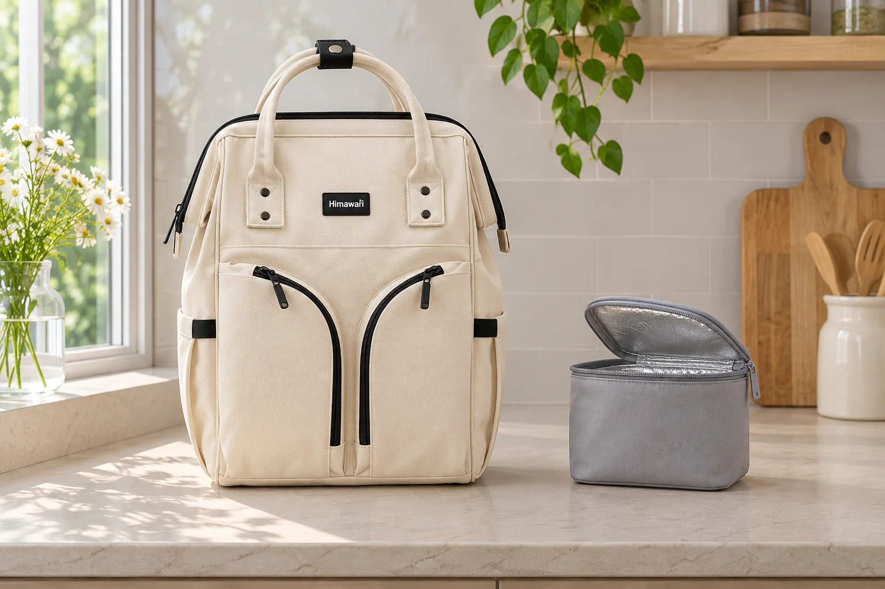
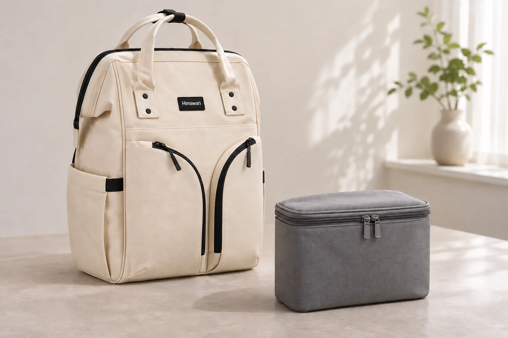
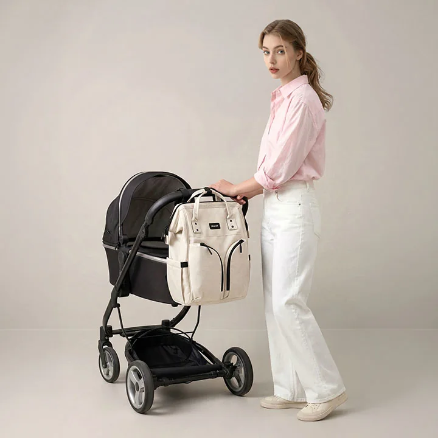

보냉 파우치를 넣으면 일반 백팩도 보냉 가방이 될까

점심을 담은 보냉 파우치를 평소 백팩에 넣으려 합니다. 가방을 하나 덜 들 수 있을 것 같지만 이 조합을 보냉 백팩이라고 불러도 될까요. 파우치의 기능과 그 바깥에 있는 백팩의 기능은 각각 확인해야 합니다. 두 물건을 겹쳐 썼다는 사실만으로 바깥 가방까지 같은 성능을 갖는 것은 아닙니다. 무엇을 차갑게 유지하고 무엇을 운반하려는지 나누면 비교할 사양도 달라집니다.
No.1208 아이보리는 백팩입니다. 공개 정보에서 외부 크기는 가로 29 × 세로 40 × 폭 17cm, 겉감과 안감은 모두 폴리에스터로 확인했습니다. 실제 사진에는 짧은 손잡이와 앞면의 검정 지퍼 선, 두드러진 앞 수납부가 보입니다. 이 글에서 확인한 자료에는 가방 전체의 보냉 지속 시간이나 시험 조건이 없습니다. 여행·기저귀가방이라는 용도 이름을 보냉 성능의 근거로 대신 쓰지 않습니다.
바깥 백팩에 맡길 일
백팩은 파우치와 평소 소지품을 운반할 후보입니다. 이때 물을 튕기는 원단이라는 안내, 단열 기능, 안쪽에서 액체가 새지 않는 구조는 서로 다른 사양입니다. 하나를 확인했다고 다른 항목까지 확인한 것으로 적을 수는 없습니다. 특히 생활방수 원단이라는 설명을 내부의 누수 방지나 음식의 보관 성능으로 넓혀 읽으면 제품을 잘못 비교할 수 있습니다. No.1208도 현재 확인한 항목과 확인하지 않은 항목을 나누어 봅니다.
미국 농무부의 도시락 안내는 식품을 차갑게 운반할 때 단열된 도시락 가방과 냉각 수단을 별도로 다룹니다. 일반 백팩에 관한 보냉 인증 자료는 아닙니다. 가방 선택에도 이 구분을 적용하면 외부 운반용 백팩과 보냉용 내부 용품의 설명서를 각각 읽어야 합니다. 구체적인 음식 보관 조건은 식품과 보냉 용품의 안내를 따릅니다. 여기서는 먹어도 되는 시간이나 온도를 백팩의 수납 상태로 판단하지 않습니다.
가방 안감이 밝거나 매끈하게 보인다는 이유로 단열재가 있다고 추측하지도 않습니다. 은색 면이 보이는 다른 제품의 사진을 이 백팩 안쪽의 구조로 옮길 수는 없습니다. 보냉 기능이 꼭 필요하다면 해당 가방에 어떤 단열 구조와 사용 조건이 안내돼 있는지 확인해야 합니다. 정보를 받지 못했다면 일반 운반용으로 검토한 상태와 보냉용으로 검증된 상태를 구별해 남깁니다.

보냉 파우치의 설명에서 남길 조건
파우치를 골랐다면 보냉이라는 이름 다음의 조건을 읽습니다. 냉각 용품이 포함되는지 별도로 준비하는지, 뚜껑을 어떤 상태로 닫아야 하는지, 용기와 함께 사용할 때 어떤 제한이 있는지 확인합니다. 표시된 시간이 있다면 무엇을 어떤 환경에서 확인한 값인지도 필요합니다. 그 숫자를 백팩 안에 넣었을 때의 결과로 옮겨 쓰지는 않습니다. 다른 가방과 겹쳐 사용한 조합의 성능까지 시험한 것은 아닐 수 있기 때문입니다.
설명에서 외부 열과 내용물의 온도를 구분하는지도 봅니다. 파우치의 외부 치수와 보냉 성능은 각각 다른 질문에 답합니다. 치수가 맞아 들어간다고 충분히 차갑게 유지된다는 결론이 나오지는 않습니다. 반대로 보냉 용도로 안내된 파우치라도 너무 커서 백팩을 닫기 어렵다면 운반 조합은 맞지 않을 수 있습니다. 사양표의 한 항목으로 두 판단을 모두 끝내지 않는 편이 선택을 분명하게 만듭니다.
부속품도 파우치의 실제 사용 구성에 포함해 봐야 합니다. 빈 상태의 파우치와 용기를 넣고 닫은 상태는 같은 외형이 아닐 수 있습니다. 필요하다고 안내된 냉각 용품까지 더하면 지퍼와 옆면이 어느 정도 벌어지는지 확인할 부분이 생깁니다. 파우치 제조사가 요구하는 구성을 임의로 빼서 백팩에 맞추기보다 완성된 묶음이 들어갈 가방을 찾습니다. 성능 조건과 수납 조건을 맞바꾸지 않는 선택입니다.

두 가방을 겹쳤을 때 확인할 자리
No.1208의 29 × 40 × 17cm는 바깥 크기입니다. 이 수치에서 안감과 앞 수납부의 깊이를 빼서 내부 공간을 계산할 수는 없습니다. 특히 파우치의 두꺼운 지퍼 테두리나 손잡이가 입구를 통과하는지는 외부 폭만으로 알기 어렵습니다. 사진에서 두 물건을 함께 놓은 것은 역할을 나누기 위한 연출이며 실제로 넣어 수납을 검증한 장면은 아닙니다. 구매 전에는 실제 입구와 내부 공간을 확인할 자료가 필요합니다.
파우치를 세워 넣을지 눕혀 넣을지도 용기의 닫힘 안내와 연결됩니다. 백팩이 깊다는 이유로 어떤 방향으로든 넣어도 된다고 판단하지 않습니다. 냉각 용품을 포함한 묶음을 안내된 방향으로 둔 뒤 가방을 닫을 수 있는지, 다른 짐이 파우치의 뚜껑을 누르는지 살펴볼 수 있습니다. 누수 방지 성능이 확인되지 않은 파우치나 용기를 백팩의 원단이 대신 보호한다고 기대할 근거는 없습니다.
꺼낼 때의 조건도 남습니다. 책이나 기기를 모두 꺼내야 파우치를 잡을 수 있다면 점심때마다 백팩을 크게 펼치게 됩니다. 별도 운반 가방을 줄인 대신 안에서 꺼내는 동작이 늘어나는 셈입니다. 손잡이를 잡을 자리를 남길 수 있는지, 외출 중 다시 넣을 때도 같은 방향을 유지할 수 있는지 봅니다. 파우치의 부피를 억지로 줄이는 것보다 다른 소지품을 옮기거나 별도로 드는 선택이 더 맞을 수도 있습니다.
사용 뒤에는 백팩과 파우치의 상태를 따로 봅니다. 파우치에 물기나 흔적이 있다면 해당 용품의 관리 안내를 따르고 백팩에 닿은 부분은 백팩의 관리 범위로 확인합니다. 보냉 파우치를 썼다는 이유로 백팩 안쪽까지 같은 방법으로 씻을 수는 없습니다. No.1208의 공개 안내는 부드러운 천을 이용한 부분 관리와 그늘 건조를 제시합니다. 구체적인 오염 처리와 내부 세척 가능 여부는 그 가방의 안내로 확인해야 합니다.
이 조합의 선택지는 하나가 아닙니다. 평소 백팩에 적합한 파우치를 넣을 수도 있고 보냉 용품을 별도로 들거나 필요한 기능이 확인된 전용 가방을 고를 수도 있습니다. No.1208을 운반 후보로 두었다면 수납 가능 여부와 보냉 조건을 각각 확인한 뒤 결정하면 됩니다. 파우치를 넣었다는 말과 보냉 성능을 확인했다는 말을 구분해야 가방의 용도도 실제 준비한 구성과 맞아집니다.
일반 구조와 제품 표기의 참고 자료: USDA 식품 운반 자료의 단열 가방·냉각 수단 구분.